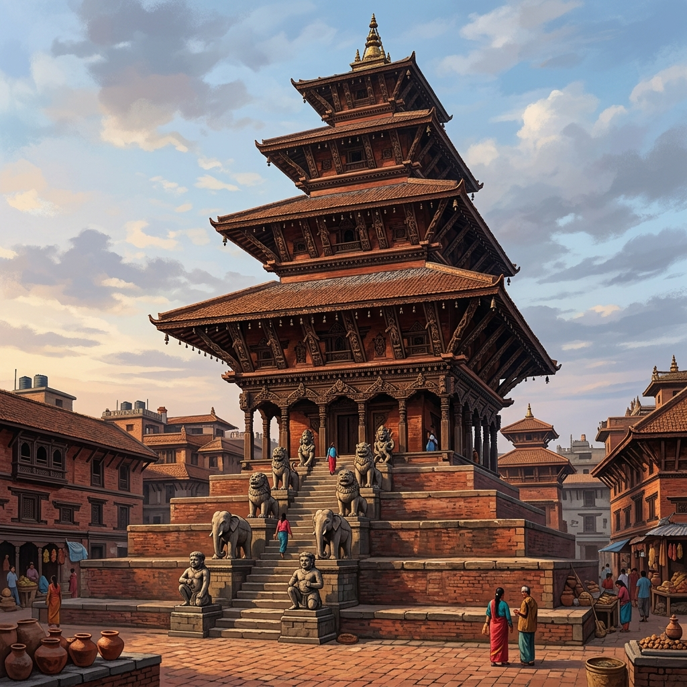
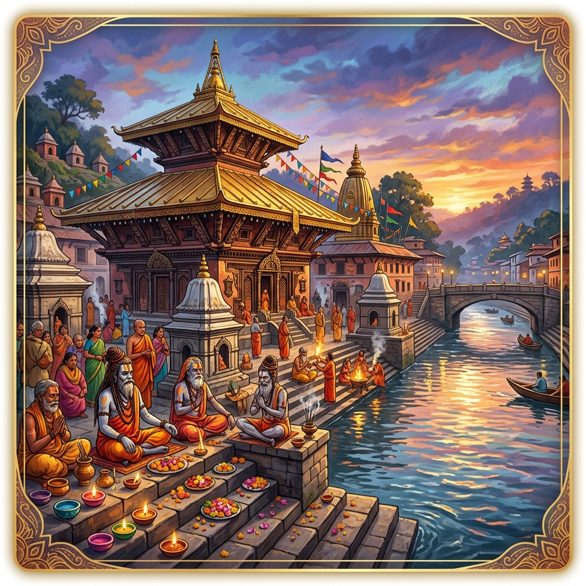

ऐतिहासिक र प्राकृतिक धरोहर Majestic Pillars of Heritage
Nepal's heritage is carved in the stone of ancient temples and elevated to the heavens by the grandest peaks on Earth.
सगरमाथा Mt. Everest
Standing at the pinnacle of the world at 8,848.86 meters, Sagarmatha ("Forehead of the Sky") is a sacred monument of pure endurance, representing the ultimate crown of the Himalayas.
स्वयम्भूनाथ Swayambhunath
One of Nepal's oldest religious structures, the "Monkey Temple" stands tall with the all-seeing eyes of the Buddha looking out over the Kathmandu Valley, symbolizing wisdom and light.

न्यातपोल मन्दिर Nyatapola Temple
Built in 1702, this five-story pagoda in Bhaktapur is an engineering and architectural marvel that has withstood multiple massive earthquakes, a testament to Newari craftsmanship.

पशुपतिनाथ Pashupatinath
Situated on the banks of the sacred Bagmati River, this sprawling temple complex serves as the spiritual heart of Hinduism in Nepal, teeming with holy sadhus, prayers, and deep devotion.
देव-ध्वनि र ध्यान साधना The Sacred Sound Sanctum
Experience traditional Nepalese meditation. Click, tap, and interact with the synthesized sound of custom-modeled bronze instruments.
ध्वनि कचौरा Tibetan Singing Bowl
Drag the mallet in a circular pattern around the rim of the bowl to feel its deep resonance.
मन्दिरको घण्टी Sacred Temple Bell
Click or tap the hanging bell to strike it. Watch the resonance wave spread and feel the meditative reverberation.
परम्परागत उत्सव र रीतिथिति Seasonal Festivals & Rituals
Immerse yourself directly in Nepal's biggest festivals. Interact with our digital mini-rituals celebrating light, sky, and colors.
तिहार र यमपञ्चक Tihar — Lighting the Void
Tihar, the spectacular Festival of Lights, celebrates the bond between humans, animals, and brothers and sisters. Homes are decorated with elaborate floral patterns called *Rangoli* and lit with terracotta oil lamps called *Diyo* to welcome Goddess Laxmi (wealth and prosperity).
अनुष्ठान सुरु गर्नुहोस् (Light the Diyos)
Tap on the dark terracotta clay lamps to ignite their sacred flame and cast warm light over the floor.
विजयादशमी र चङ्गा Dashain — Touching the Winds
Dashain is Nepal's grandest festival, symbolizing the triumph of good over evil. The skies turn into a vibrant canvas speckled with colorful paper kites (*Changga*). Flying a kite represents sending messages of thanks to the gods for the post-monsoon harvest and guiding spirits to the heavens.
आकाशमा चङ्गा उडाउनुहोस् (Fly the Kite)
Move your cursor or finger across the blue sky to steer the traditional diamond kite. Watch it dynamically adjust its angles, fighting the Himalayan breeze.
नेपाली हस्तकला र चिनारी Emblems of Nepalese Craft
Explore the masterfully forged icons that carry the soul, history, and proud resilience of the Nepalese identity.
खुकुरी The Khukuri
The legendary curved steel knife of the Gurkhas. More than a weapon, it is a versatile utility tool, a religious emblem used during Dashain, and a timeless symbol of courage, honor, and sovereign freedom.
ढाका टोपी Dhaka Topi
The traditional brimless cap, woven hand-loom with raw cotton in intricate, colorful geometric patterns. It represents the towering snow-capped peaks of the Himalayas, worn proudly during formal ceremonies to declare national identity.